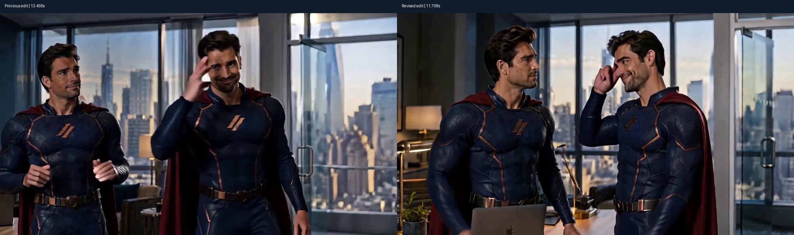

Delegation.
He created a clone to cover his meeting. The clone had other plans.
16.21 seconds · 1024 × 576 · 24 fps · English captions and generated audio
Download the original-quality film · More v0.5.1 videos · Source code
A clearer conversation
The clone now addresses the original through both replies, then salutes him before turning to leave. The selected 512-enhanced opening and the original's two speaking shots are retained.

Made on a Mac
| Additional source attempt | Generated | Invocation time | Sampled peak |
|---|---|---|---|
| Dialogue retake · two clone shots selected | 10 s | 396.12 s | 60.52 GiB |
| Farewell retake | 5 s | 225.52 s | 56.81 GiB |
These two additional attempts took 621.65 seconds / 10.36 minutes, with a sequential peak of 60.52 GiB. This includes the complete partially rejected dialogue attempt. Earlier source generation, the reused opening face enhancement, and editing are separate costs.
Released h3-apple 0.5.1 · four steps · Apple M5 Max, 40 GPU cores, 128 GiB · macOS 26.6.1. Memory is the one-second sampled sum of process-tree physical footprint, with per-process RSS fallback. These are production observations, not a controlled speed comparison.
Production notes and exact prompts
The first and third shots of the full dialogue retake contained an extra hero and were excluded. The final edit uses its two validated clone shots and the original's correct speaking shots. A gentle 1.16× digital push and a half-second still hold finish the exit. The new ending uses native 576p detail.
The reused opening uses a 512-pixel face canvas from separate offline ComfyUI enhancement. This is additional post-production, not a built-in h3-apple 0.5.1 capability or a whole-film speed claim.
All final frames and audio decode successfully. Selected story beats, cuts and the last frame were visually inspected; independent ASR matches the four intended lines. No human audio listening, perfect lip synchronization, or flawless generated detail is claimed. An initial CPU edit with incorrect final-hold timestamps was corrected before publication.
Measurements and file identity · Dialogue retake prompt · Farewell retake prompt · Release · Model and dependency licenses